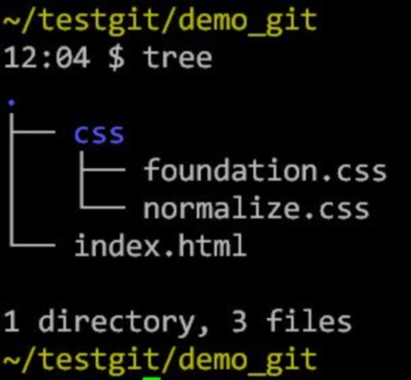
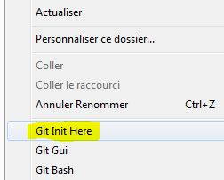
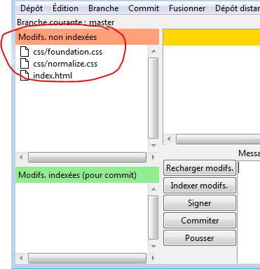
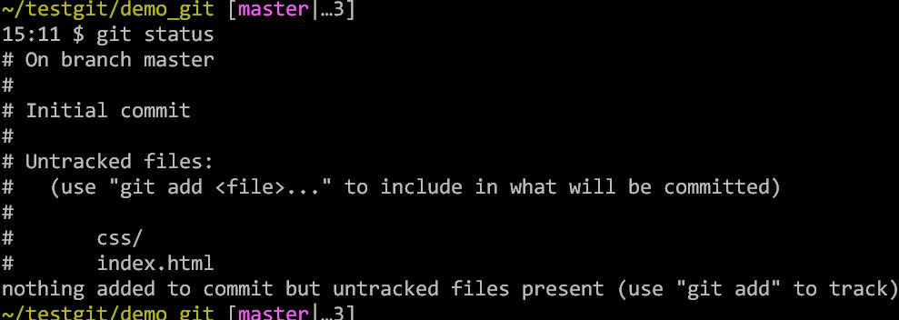
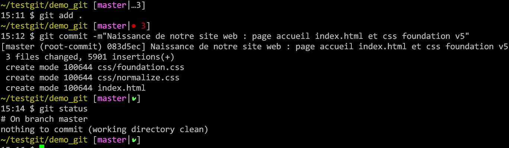
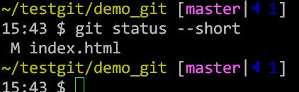
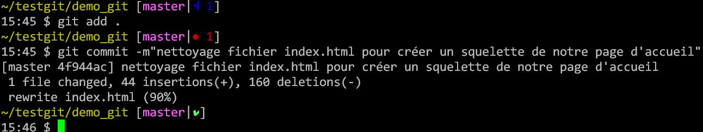

Introduction à git / github
Objectif :
- Vous faire appréhender la puissance et l'utilité de git
- Il y aura des simplifications pour aller droit au but !
Beaucoup d'exemples sont montré en ligne de commande : Pas de panique :)

- On est au coeur des choses, ça facilite la compréhension
- Une fois qu'on a compris le principe, on prend une jolie interface qui fait la meme choses avec des clics !!
Intro et historique
Git permet de :
- Manipuler vos données sans peur de les "perdre" (Historique des modifications dans Git)
- Tester plusieurs idées en "parallèle" ("Branches" dans Git)
- Travailler là dessus avec vos amis (Git "Remote")
Il y a 3 types de personnes dans le monde :
- Ceux qui utilisent Git
- Ceux qui utilise autre chose que Git
- Ceux qui n'utilise pas d'outils pour le travail collaboratif et décentralisé !
Pourquoi utiliser GIT ?
- Simplicité (après courbe d'aprentissage)
- Rapidité
- Beaucoup utilisé pour l'open source
- Beaucoup de ressources d'aide et aide en ligne
- La limite est votre imagination ! (plein de projets originaux détournent ("hack") l'utilisation de Git : liste partagés, wiki, ...)
Utlisation en local
La pratique et ensuite la théorie ...
Nous allons créer un petit site statique (en HTML5) pour les besoin de la démo.
On commence avec un répértoire dans lequel nous avons notre projet
On veux gérer notre projet avec Git, le but de cette présentation :)
git initToues les commandes sont de la forme "git commande_git". Pour avoir de l'aide sur une commande particulière :
git help commande_gitexemple pour l'aide sur init :
git help init- La commande "git init" va simplement créer un dossier ".git" à la racine de notre projet.
TOUT ce qui est necessaire à la gestion de notre projet par Git se trouve dedans ! - Cette opération peut etre effectuée dans un dossier contenant déja des fichiers ou bien dans un dossier vide
On peut faire la meme chose via une interface graphique (Clients Git gratuits/Open Source pour Windows, Linux, MacOS, ...)
 Nous allons maintenant ajouter les 3 fichiers dans Git
 Encore une fois, nous aurions pu faire ça avec une interface graphique (clic, clic, clic, :)
Dans les exemples suivants, je vais me concentrer sur la ligne de comande qui constitue le coeur de git car tous ce que fais l'interface graphique repose sur les commande "git" en arrière plan et la ligne de commade est BEAUCOUP plus puissante que les interfaces graphiques :
Maintenant que nos fichiers sont "dans" Git, que se passe t-il si on en modifie un ?
On refait les meme commande "git add" et "git commit" pour avoir un répértoire de travail "propre"
Quel est le workflow d'une utilisation classique de Git ?
- Vous travaillez sur votre projet depuis votre "working directory" (modifications atomique)
- Vous ajoutez les fichiers dans la zone d'index ou "stagging area" en anglais
- Vous faites un "commit" qui prend les ficheirs située dans la zone d'index et les enregistre de façon permanente dans la "repository" Git
Au début il y a beaucoup de vocabulaire à retenir pour comprendre Git : working directory, Stagging area, commit, repository, ... Mais rassurez vous : très rapidement ces concepts deviennent concrets et facile à utiliser
Ce qu'il faut retenir pour le moment, c'est que la zone d'index (ou stagging area) permet de selectionner finement ce que l'on veux entreposer dans git (Repository) de façon permanante
Mais retournons à notre projet : nous avons effectuer 2 fois la commande "git commit", voyons ce que contient l' "historique"
git logNous voyons ici nos 2 commit (identifiés par des numéros) qui representent l'état de notre arboresence lorsque nous avons fait le commit, en ce moment nous pointons en haut de la pile, le le dernier commt (branche "master")
Voyons cela de plus près ...
Que se passe t-il en coulisse ?
Si vous arrivez à avoir une image correcte de la façon dont Git fonctionne en interne tout vous paraitra clair et logique par la suite !!!
Voila comment git enregistre les données

git cat-fileUtlisation en mode collaboratif / distribué
Utlisation de GitHub
Add the Remote repository
git remote add luisgithub git@github.com:luisibanez/Git-Branchy-Story-Exercise-02.git
Add Remote
Repositories
Work with your Team
- Ask team members for their fork address
- Add their address as a remote
- Name the remotes after their first names
Your push may fail...
with a message like this
! [rejected] master -> master (non-fast-forward)
error: failed to push some refs to 'git@github.com:ossp/Git-Branchy-Story-Exercise-01.git'
hint: Updates were rejected because a pushed branch tip is behind its remote
hint: counterpart. Check out this branch and merge the remote changes
hint: (e.g. 'git pull') before pushing again.
hint: See the 'Note about fast-forwards' in 'git push --help' for details.
This just means
than someone else
pushed before you
so now
you have to update
your local repository
Update With the Command
git pull origin master
and then try again the Command
git push origin master